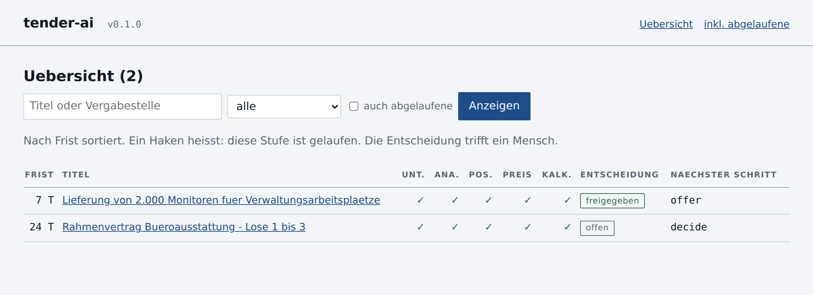
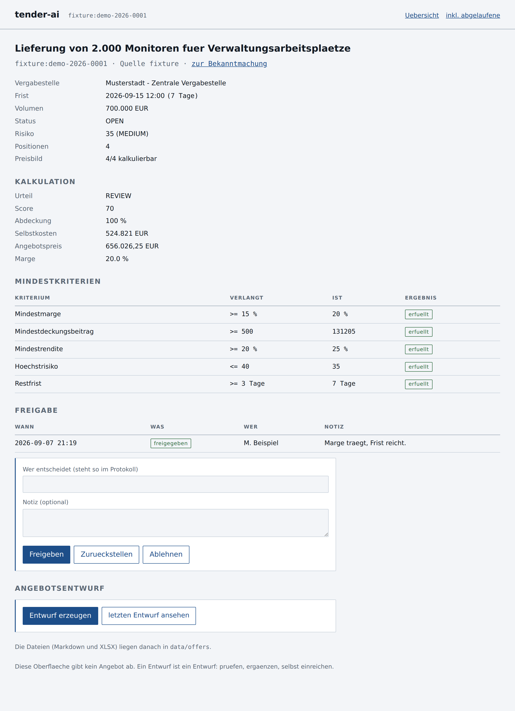

01
Recherchieren
TED, RSS-Portale und Vergabeportale ohne Schnittstelle (ueber konfigurierbare Selektoren). Dubletten ueber mehrere Quellen hinweg werden erkannt, Aenderungen an Frist, Volumen und Status protokolliert.
tender-ai search
Procurement Intelligence Agent
Findet oeffentliche Ausschreibungen, liest die Vergabeunterlagen, erkennt die Positionen des Leistungsverzeichnisses, recherchiert Preise dazu und rechnet aus, ob sich ein Angebot lohnt.
Ein Kommandozeilenwerkzeug fuer den eigenen Rechner oder Server. Jede Angabe
traegt ihre Quelle, fehlende Werte heissen UNKNOWN statt geraten
zu werden - und die Entscheidung, ob angeboten wird, trifft ein Mensch.
tender-ai pipeline faehrt Recherche, Analyse, Positionen, Preise,
Kalkulation und Meldung in einem Durchgang - im cron-Eintrag eine Zeile statt
sechs. Jede Stufe fasst nur an, was sich seit dem letzten Lauf geaendert hat.
$ tender-ai pipeline --source fixture Pipeline-Lauf ┏━━━━━━━━━━━━━┳━━━━━━━━━━━━━┳━━━━━━━━━━━━━━━━┳━━━━━━━┳━━━━━━━━━━━━━━━━━━━━━━━┓ ┃ Stufe ┃ Verarbeitet ┃ Fehlgeschlagen ┃ Dauer ┃ Hinweis ┃ ┡━━━━━━━━━━━━━╇━━━━━━━━━━━━━╇━━━━━━━━━━━━━━━━╇━━━━━━━╇━━━━━━━━━━━━━━━━━━━━━━━┩ │ Recherche │ 2 │ 0 │ 0.2 s │ new: 2, updated: 0, │ │ │ │ │ │ duplicates: 0, │ │ │ │ │ │ sources_failed: 0 │ │ Analyse │ 2 │ 0 │ 0.2 s │ │ │ Positionen │ 2 │ 0 │ 0.0 s │ items: 8 │ │ Preise │ 2 │ 0 │ 0.1 s │ │ │ Kalkulation │ 2 │ 0 │ 0.0 s │ │ │ Meldung │ 0 │ 0 │ 0.1 s │ gefunden: 4, kanaele: │ │ │ │ │ │ keiner aktiv │ └─────────────┴─────────────┴────────────────┴───────┴───────────────────────┘ Naechster Schritt: tender-ai status - die Freigabe bleibt Handarbeit.
Faellt eine Stufe aus, arbeiten die spaeteren auf dem vorhandenen Bestand weiter; der Bericht nennt die ausgefallene Stufe mit Fehlertext, und der Exit-Code meldet sie an cron.
Die Reihenfolge ist keine Gliederung, sondern eine Abhaengigkeit: ohne Unterlagen keine Positionen, ohne Positionen keine Preise, ohne Preise keine Kalkulation. Jede Stufe laeuft auch einzeln.
TED, RSS-Portale und Vergabeportale ohne Schnittstelle (ueber konfigurierbare Selektoren). Dubletten ueber mehrere Quellen hinweg werden erkannt, Aenderungen an Frist, Volumen und Status protokolliert.
tender-ai search
Laedt die frei zugaenglichen Vergabeunterlagen und liest Text und Tabellen aus PDF, DOCX, XLSX, HTML und CSV. Daraus erkennt es Anforderungen - Zertifikate, Zahlungs- und Lieferbedingungen, Herstellerbindung - und begruendet einen Risiko-Score.
tender-ai documents <id> · analyze <id>
Aus den erkannten Tabellen die zu liefernden Positionen: Ordnungszahl, Bezeichnung, Menge, Einheit, Hersteller, Typ, Artikelnummer - jede mit Fundstelle und Konfidenz.
tender-ai items <id>
Befragt die konfigurierten Preisquellen (Lieferantenpreislisten als CSV, XLSX, JSON), ordnet Treffer begruendet zu und verdichtet sie zu einem Preisbild - mit Netto/Brutto-Status, Staffelpreisen, Versandkosten und Verfuegbarkeit.
tender-ai prices <id>
Rechnet Einkauf, Versand und Zuschlaege zu Selbstkosten, daraus einen Angebotspreis, und prueft das Ergebnis gegen die Mindestkriterien. Fehlende Daten gelten nie als erfuelltes Kriterium, sondern als offen.
tender-ai calculate <id>
Haelt die Entscheidung eines Menschen fest und erzeugt daraufhin einen
Angebotsstatus zeigt zu
jeder Ausschreibung, wo sie steht und was der naechste Schritt waere.
tender-ai decide <id> --approve · offer <id>
Die Stufen 1 bis 5 und die Meldung als ein Aufruf - fuer den Eintrag in cron oder einen systemd-Timer. Faellt eine Stufe aus, laufen die spaeteren auf dem vorhandenen Bestand weiter.
tender-ai pipeline
Neu gefunden, geaendert, Frist laeuft ab, Freigabe faellig: als E-Mail oder Webhook. Jede Meldung geht je Kanal genau einmal hinaus - was zugestellt wurde, steht in der Datenbank, nicht im Arbeitsspeicher.
tender-ai notify
Eine kleine Weboberflaeche fuer den eigenen Rechner: Uebersicht mit
Suche und Filter, Detailansicht mit Zahlen und Kriterien, Freigabe mit
Namen und Notiz. Ohne Zugangstoken bleibt sie auf 127.0.0.1.
tender-ai serve
tender-ai serve startet eine Oberflaeche auf dem eigenen Rechner.
Sie zeigt den Stand und nimmt die Entscheidung entgegen - recherchiert und
gerechnet wird weiter im Takt, damit dieselbe Logik nicht an zwei Orten
gepflegt werden muss.


Beide Aufnahmen stammen aus einem Lauf gegen die mitgelieferten Demodaten
(tender-ai pipeline --source fixture). Die Ausschreibungen darin
sind frei erfunden.
Die Grenzen sind keine fehlenden Funktionen, sondern Entscheidungen. Sie stehen als Tests im Projekt, damit sie nicht versehentlich aufweichen.
Der Takt endet vor der Freigabe. Was entsteht, ist ein Entwurf zum Pruefen; die Abgabe erfolgt von Hand ueber das Vergabeportal. Der Ablauf bleibt: Analyse → Freigabe durch den Nutzer → Entwurf → manuelle Pruefung → manuelle Abgabe.
Gelesen werden ausschliesslich oeffentlich erreichbare Seiten. Captchas, Logins und Paywalls werden nicht umgangen, robots.txt wird beachtet - eine Sperre erscheint als Quellfehler im Bericht, nicht als Umweg.
Fehlende Werte erscheinen als UNKNOWN, Schaetzungen sind als
solche gekennzeichnet, und jede Angabe traegt Quelle und Abrufzeitpunkt.
Eine Datenluecke sieht nie aus wie ein Ergebnis.
Es gibt nichts zu registrieren und keinen Dienst dazwischen: das Werkzeug
laeuft auf deinem Rechner, die Datenbank ist eine Datei im Projektordner.
API-Schluessel sind optional und stehen in .env.
git clone https://github.com/I-Fichtner-I/Procurement-Intelligence.git
cd Procurement-Intelligence
python3.12 -m venv .venv
source .venv/bin/activate
pip install -e ".[dev]"
tender-ai init # Verzeichnisse und Datenbank anlegen
tender-ai pipeline --source fixture # Demodaten aus data/fixtures/ tender-ai status # wo steht was tender-ai serve # http://127.0.0.1:8080
Die Demodaten bringen ein Leistungsverzeichnis mit; der Lauf kommt damit
ohne Netz bis zur Kalkulation. Fuer die Preise die Beispielliste in
config.yaml aktivieren (price_sources.beispiel_liste).
docker build -t tender-ai . docker run --rm -v "$PWD/data:/app/data" tender-ai search --source fixture
Vor dem ersten echten Lauf lohnt tender-ai doctor: der Befehl
prueft jede konfigurierte Quelle einzeln gegen den echten Endpunkt und meldet,
welche Felder ankommen.
| Befehl | Wofuer |
|---|---|
tender-ai init | Verzeichnisse und Datenbank anlegen |
tender-ai doctor | jede Quelle einzeln gegen den echten Endpunkt pruefen |
tender-ai search | Ausschreibungen recherchieren und speichern |
tender-ai pipeline | ganze Kette in einem Takt: Recherche bis Kalkulation |
tender-ai list · show <id> | Bestand ansehen, Details mit Fundstellen |
tender-ai documents <id> | Vergabeunterlagen laden und auslesen |
tender-ai analyze <id> | Anforderungen erkennen, Risiko begruenden |
tender-ai items <id> | Positionen des Leistungsverzeichnisses erkennen |
tender-ai prices <id> | Preise zu den Positionen recherchieren |
tender-ai calculate <id> | Kosten, Marge, Entscheidungsvorlage |
tender-ai decide <id> | Freigabe entscheiden und protokollieren |
tender-ai offer <id> | Angebotsentwurf erzeugen (nur nach Freigabe) |
tender-ai notify | neue, geaenderte und fristnahe Ausschreibungen melden |
tender-ai serve | Weboberflaeche mit Uebersicht, Details und Freigabe |
tender-ai status | wo jede Ausschreibung steht und was fehlt |
tender-ai export <datei> | JSON, CSV oder XLSX |
tender-ai runs | Laufprotokoll mit Status und Quellenzustand |